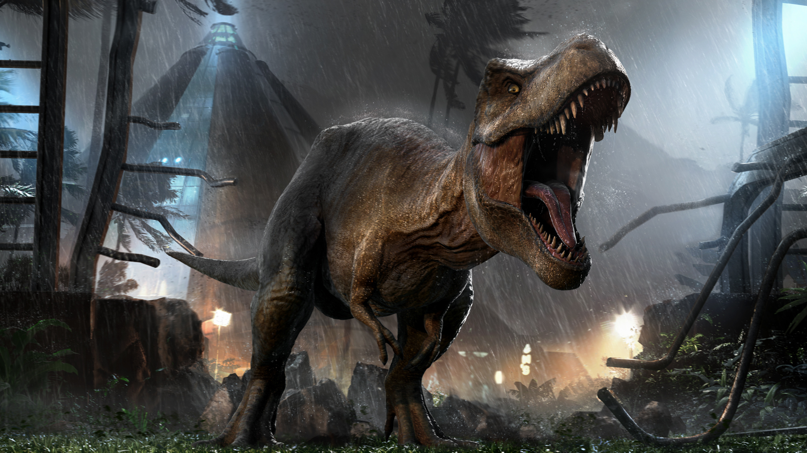
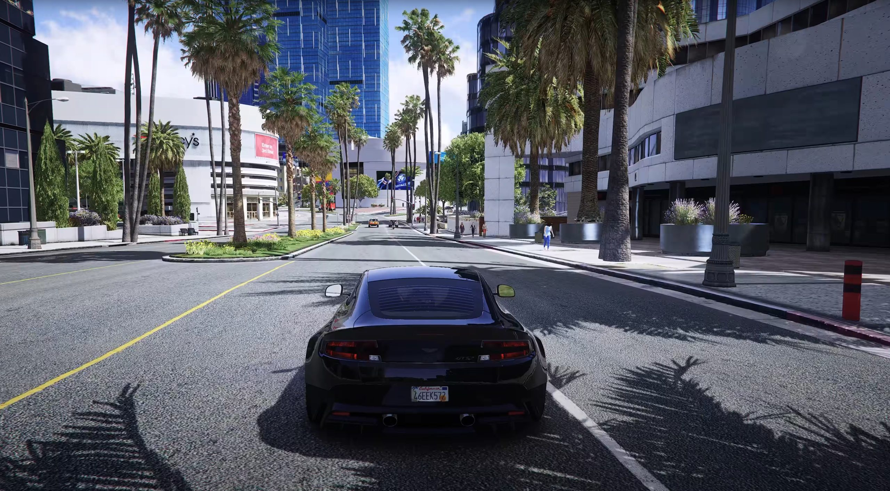

Elias Emanuel Callisaya Ruiz
Videojuegos Favoritos

Minecraft

Jurassic World Evolution

Grand Theft Auto V
Minecraft es un videojuego de construcción y aventura desarrollado por Mojang Studios, lanzado oficialmente en 2011. Desde su creación, ha capturado la imaginación de millones de jugadores alrededor del mundo, convirtiéndose en uno de los títulos más vendidos y reconocibles de la historia. El juego permite a los jugadores explorar un vasto mundo abierto compuesto de bloques, donde pueden recolectar recursos, construir estructuras y participar en diversas actividades.
Una de las características más distintivas de Minecraft es su estilo visual pixelado y su enfoque en la creatividad. Los jugadores pueden elegir entre varios modos de juego, siendo los más populares el modo creativo, donde pueden construir libremente sin restricciones, y el modo supervivencia, donde deben gestionar su salud y recursos mientras enfrentan desafíos como monstruos y la necesidad de alimentarse. Esta flexibilidad permite a los jugadores personalizar su experiencia y crear todo tipo de construcciones, desde casas simples hasta complejas maquinarias y ciudades enteras.
Además, Minecraft ha fomentado una comunidad activa de creadores que producen contenido adicional, como mods, texturas y mapas personalizados. Estas modificaciones permiten a los jugadores ampliar su experiencia de juego, agregando nuevos elementos, mecánicas y desafíos. El juego también incluye un modo multijugador, donde los jugadores pueden unirse a servidores para colaborar o competir con otros, lo que agrega otra capa de interactividad.
A lo largo de los años, Minecraft ha sido actualizado constantemente, incorporando nuevas características, biomas, criaturas y elementos de juego. Algunas de las actualizaciones más notables han introducido nuevos bloques, sistemas de redstone para crear circuitos y mecanismos complejos, y la posibilidad de explorar dimensiones adicionales como el Nether y el End.
La influencia de Minecraft se extiende más allá del ámbito de los videojuegos; ha impactado en la educación, con muchas escuelas utilizando el juego como herramienta de aprendizaje en áreas como matemáticas, diseño y trabajo en equipo. Su popularidad también ha llevado a la creación de una serie de productos derivados, incluidos libros, juguetes y un próximo largometraje.
En resumen, Minecraft es más que un simple juego; es un fenómeno cultural que ha revolucionado la forma en que las personas juegan, crean y se conectan. Su enfoque en la creatividad, la exploración y la colaboración ha asegurado su lugar como uno de los videojuegos más influyentes de todos los tiempos, con una comunidad vibrante y activa que sigue creciendo.
Una de las características más distintivas de Minecraft es su estilo visual pixelado y su enfoque en la creatividad. Los jugadores pueden elegir entre varios modos de juego, siendo los más populares el modo creativo, donde pueden construir libremente sin restricciones, y el modo supervivencia, donde deben gestionar su salud y recursos mientras enfrentan desafíos como monstruos y la necesidad de alimentarse. Esta flexibilidad permite a los jugadores personalizar su experiencia y crear todo tipo de construcciones, desde casas simples hasta complejas maquinarias y ciudades enteras.
Además, Minecraft ha fomentado una comunidad activa de creadores que producen contenido adicional, como mods, texturas y mapas personalizados. Estas modificaciones permiten a los jugadores ampliar su experiencia de juego, agregando nuevos elementos, mecánicas y desafíos. El juego también incluye un modo multijugador, donde los jugadores pueden unirse a servidores para colaborar o competir con otros, lo que agrega otra capa de interactividad.
A lo largo de los años, Minecraft ha sido actualizado constantemente, incorporando nuevas características, biomas, criaturas y elementos de juego. Algunas de las actualizaciones más notables han introducido nuevos bloques, sistemas de redstone para crear circuitos y mecanismos complejos, y la posibilidad de explorar dimensiones adicionales como el Nether y el End.
La influencia de Minecraft se extiende más allá del ámbito de los videojuegos; ha impactado en la educación, con muchas escuelas utilizando el juego como herramienta de aprendizaje en áreas como matemáticas, diseño y trabajo en equipo. Su popularidad también ha llevado a la creación de una serie de productos derivados, incluidos libros, juguetes y un próximo largometraje.
En resumen, Minecraft es más que un simple juego; es un fenómeno cultural que ha revolucionado la forma en que las personas juegan, crean y se conectan. Su enfoque en la creatividad, la exploración y la colaboración ha asegurado su lugar como uno de los videojuegos más influyentes de todos los tiempos, con una comunidad vibrante y activa que sigue creciendo.
Jurassic World Evolution es un videojuego de simulación y estrategia desarrollado por Frontier Developments, lanzado en 2018. Ambientado en el universo de la franquicia Jurassic Park, el juego permite a los jugadores asumir el papel de un gestor de un parque temático de dinosaurios, donde deben construir y administrar instalaciones para albergar y cuidar a diversas especies prehistóricas.
En Jurassic World Evolution, los jugadores pueden crear y personalizar su parque, investigando nuevas tecnologías, gestionando la genética de los dinosaurios y asegurando el bienestar de los visitantes. El juego ofrece un enfoque realista en la creación de dinosaurios, donde los jugadores pueden combinar ADN de diferentes especies para crear nuevas variantes, cada una con sus propias características y comportamientos. Este aspecto de la genética es crucial, ya que los jugadores deben equilibrar la seguridad del parque con la satisfacción de los visitantes.
El juego se divide en varias campañas y escenarios que se desarrollan en diferentes islas, cada una con sus propios desafíos y requisitos de gestión. A medida que avanzan, los jugadores deben tomar decisiones estratégicas, como cómo manejar la seguridad, el suministro de recursos y el manejo de crisis, como escapes de dinosaurios o enfermedades. Estas decisiones afectan la reputación del parque y su viabilidad a largo plazo.
Además de la jugabilidad principal, Jurassic World Evolution incluye gráficos impresionantes y un entorno visual detallado, que permite a los jugadores disfrutar de la belleza de los dinosaurios y el paisaje. Los efectos de sonido y la música también contribuyen a crear una experiencia inmersiva, transportando a los jugadores al mundo de Jurassic Park.
Desde su lanzamiento, el juego ha recibido varias expansiones y actualizaciones que han añadido nuevos dinosaurios, edificios y características de juego. Expansiones como Jurassic World Evolution: Claire's Sanctuary y Jurassic World Evolution: Aftermath han ampliado la narrativa y las posibilidades de gestión, ofreciendo a los jugadores más contenido y desafíos.
Jurassic World Evolution no solo ha atraído a los fanáticos de la franquicia, sino que también ha sido elogiado por su jugabilidad profunda y su enfoque en la gestión estratégica. Con su mezcla de creatividad y desafío, el juego se ha consolidado como una experiencia única para los amantes de los dinosaurios y los simuladores de gestión, permitiendo a los jugadores cumplir el sueño de construir su propio parque de dinosaurios.
En Jurassic World Evolution, los jugadores pueden crear y personalizar su parque, investigando nuevas tecnologías, gestionando la genética de los dinosaurios y asegurando el bienestar de los visitantes. El juego ofrece un enfoque realista en la creación de dinosaurios, donde los jugadores pueden combinar ADN de diferentes especies para crear nuevas variantes, cada una con sus propias características y comportamientos. Este aspecto de la genética es crucial, ya que los jugadores deben equilibrar la seguridad del parque con la satisfacción de los visitantes.
El juego se divide en varias campañas y escenarios que se desarrollan en diferentes islas, cada una con sus propios desafíos y requisitos de gestión. A medida que avanzan, los jugadores deben tomar decisiones estratégicas, como cómo manejar la seguridad, el suministro de recursos y el manejo de crisis, como escapes de dinosaurios o enfermedades. Estas decisiones afectan la reputación del parque y su viabilidad a largo plazo.
Además de la jugabilidad principal, Jurassic World Evolution incluye gráficos impresionantes y un entorno visual detallado, que permite a los jugadores disfrutar de la belleza de los dinosaurios y el paisaje. Los efectos de sonido y la música también contribuyen a crear una experiencia inmersiva, transportando a los jugadores al mundo de Jurassic Park.
Desde su lanzamiento, el juego ha recibido varias expansiones y actualizaciones que han añadido nuevos dinosaurios, edificios y características de juego. Expansiones como Jurassic World Evolution: Claire's Sanctuary y Jurassic World Evolution: Aftermath han ampliado la narrativa y las posibilidades de gestión, ofreciendo a los jugadores más contenido y desafíos.
Jurassic World Evolution no solo ha atraído a los fanáticos de la franquicia, sino que también ha sido elogiado por su jugabilidad profunda y su enfoque en la gestión estratégica. Con su mezcla de creatividad y desafío, el juego se ha consolidado como una experiencia única para los amantes de los dinosaurios y los simuladores de gestión, permitiendo a los jugadores cumplir el sueño de construir su propio parque de dinosaurios.
Grand Theft Auto V (GTAV) es un videojuego de acción y aventura desarrollado por Rockstar North y lanzado en 2013. Ambientado en la ficticia ciudad de Los Santos, que se basa en Los Ángeles, el juego se destaca por su extenso mundo abierto y su narrativa profunda y envolvente. Los jugadores asumen el control de tres protagonistas: Michael De Santa, un ex ladrón de bancos que vive en la opulencia, Franklin Clinton, un joven con aspiraciones de ascender en el mundo criminal, y Trevor Philips, un criminal violento y caótico. Esta estructura de múltiples personajes permite a los jugadores experimentar la historia desde diferentes perspectivas y estilos de juego.
Uno de los aspectos más innovadores de GTAV es su capacidad para alternar entre los personajes en tiempo real, lo que agrega dinamismo a la narrativa y permite a los jugadores abordar misiones de diversas maneras. La historia se entrelaza a medida que los personajes se involucran en robos, conflictos con las autoridades y enfrentamientos con otros criminales. Además, el juego ofrece una gran variedad de actividades secundarias, que incluyen deportes, carreras, misiones secundarias y exploración del vasto entorno.
GTAV también cuenta con un componente multijugador llamado GTA Online, que ha evolucionado significativamente desde su lanzamiento. En este modo, los jugadores pueden unirse para participar en misiones, realizar robos, competir en carreras y explorar el mundo juntos. GTA Online ha recibido numerosas actualizaciones, introduciendo nuevas misiones, eventos y elementos de personalización, lo que mantiene a la comunidad activa y comprometida.
El mundo de GTAV es notable por su atención al detalle, desde el diseño de la ciudad hasta la interacción con NPCs (personajes no jugables). Los jugadores pueden experimentar una vida urbana vibrante, repleta de actividades, eventos y una economía que simula la vida real. La capacidad de comprar propiedades, vehículos y negocios añade una capa de estrategia y personalización al juego.
Desde su lanzamiento, GTAV ha sido aclamado por la crítica y ha vendido millones de copias en todo el mundo, convirtiéndose en uno de los videojuegos más vendidos de todos los tiempos. Su influencia en la cultura del videojuego es indiscutible, habiendo establecido estándares para la narrativa en juegos de mundo abierto y el desarrollo de personajes.
La continua popularidad de GTAV y su impacto en la comunidad de videojuegos lo convierten en un hito en la industria, asegurando que seguirá siendo relevante en los años venideros. Con su combinación de historia, jugabilidad y un mundo abierto expansivo, Grand Theft Auto V es un ejemplo destacado de lo que puede lograr el medio en términos de narrativa y diseño de juego.
Uno de los aspectos más innovadores de GTAV es su capacidad para alternar entre los personajes en tiempo real, lo que agrega dinamismo a la narrativa y permite a los jugadores abordar misiones de diversas maneras. La historia se entrelaza a medida que los personajes se involucran en robos, conflictos con las autoridades y enfrentamientos con otros criminales. Además, el juego ofrece una gran variedad de actividades secundarias, que incluyen deportes, carreras, misiones secundarias y exploración del vasto entorno.
GTAV también cuenta con un componente multijugador llamado GTA Online, que ha evolucionado significativamente desde su lanzamiento. En este modo, los jugadores pueden unirse para participar en misiones, realizar robos, competir en carreras y explorar el mundo juntos. GTA Online ha recibido numerosas actualizaciones, introduciendo nuevas misiones, eventos y elementos de personalización, lo que mantiene a la comunidad activa y comprometida.
El mundo de GTAV es notable por su atención al detalle, desde el diseño de la ciudad hasta la interacción con NPCs (personajes no jugables). Los jugadores pueden experimentar una vida urbana vibrante, repleta de actividades, eventos y una economía que simula la vida real. La capacidad de comprar propiedades, vehículos y negocios añade una capa de estrategia y personalización al juego.
Desde su lanzamiento, GTAV ha sido aclamado por la crítica y ha vendido millones de copias en todo el mundo, convirtiéndose en uno de los videojuegos más vendidos de todos los tiempos. Su influencia en la cultura del videojuego es indiscutible, habiendo establecido estándares para la narrativa en juegos de mundo abierto y el desarrollo de personajes.
La continua popularidad de GTAV y su impacto en la comunidad de videojuegos lo convierten en un hito en la industria, asegurando que seguirá siendo relevante en los años venideros. Con su combinación de historia, jugabilidad y un mundo abierto expansivo, Grand Theft Auto V es un ejemplo destacado de lo que puede lograr el medio en términos de narrativa y diseño de juego.